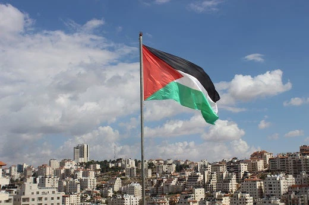

Ayo Mulai Berdonasi!

Dakwah & Kemanusiaan
Yuk, Membatu saudara kita di palestine!
KOTA BANDA ACEH
Terkumpul
Rp 150.000
34 Hari lagi
Dakwah & Kemanusiaan
Yuk, Ikut Berikan Baju Hari Raya untuk Anak Yatim!
KOTA BANDA ACEH
Terkumpul
Rp 150.000
34 Hari lagi

Dakwah & Kemanusiaan
NU Peduli Bencana Banjir di Indonesia
KOTA JAKARTA PUSAT
Terkumpul
Rp 2.280.000
8 Hari lagi